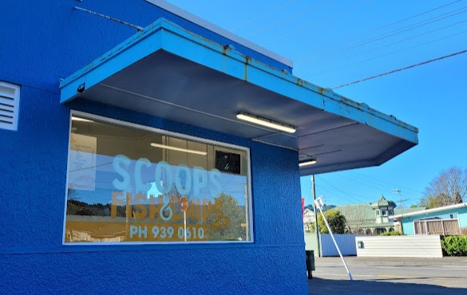

Out of Bounds
Dairy
- Students are not allowed to loiter around the vicinity of the dairy between 8.15am and 3.30pm. If they are using the dairy before school and after school they must not wait around the entrance, on the footpath in front of the dairy or sit on the seats. They may use the dairy but must move away after leaving it.
- The dairy is out of bounds between 8.35am and 3pm for all students i.e. during school time.
- The dairy is out of bounds for BUS students from 8.35 am until 3.30pm.
- Students (non-bus students) who cross to the dairy side of Ward Street in front of the school between 3pm and 3.30pm must not cross back over to the school side of Ward Street within the frontage of the school.
Bus Students
- Bus students must wait for their buses in the Hall/Drama porch area. They are not allowed to use the dairy until after 3.30pm or until deemed safe by the duty staff. If they do use the dairy after 3.30 they can’t wait for their bus there
- Bus students who do not wait in the designated bus area are unlikely to be allowed onto their bus.
- Bus students must line up for their bus in an orderly fashion without pushing or shoving.
- Students who are not catching a bus are expected to move away from the school in an orderly fashion and not to loiter in the car park or on the footpaths in the vicinity of the school on either side of Ward Street.

Fish and Chips Shop/Quinn's Post
- Students are not permitted to go to the fish and chip shop or Quinn's Post during the day (except Year 13s).
- Year 13's are not to purchase food for younger students.
Year 13's
- Year 13's have the right to leave school during breaks and study. They are to sign in and out at the office.